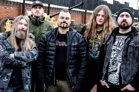

Členové kapely
Sabaton má několik stálých členů, kteří během let tvořili jádro kapely. Nejvíce viditelnou postavou je zpěvák Joakim Brodén, známý pro svůj charakteristický hlas a pódiové vystupování. Dalšími členy jsou baskytarista Pär Sundström a kytaristé, kteří se v průběhu let obměňovali. Kapela má zkušené hudebníky, kteří dohromady vytvářejí charakteristický zvuk Sabatonu. Na koncertech jsou často vidět v uniformách nebo s vojenskými motivy.
Členové kapely spolupracují i mimo Sabaton, například na vedlejších projektech nebo v nahrávacích studiích. Je důležité zmínit, že některé změny v sestavě přinesly nové nápady do hudby a koncertních show. Fanoušci často sledují nejen hudbu, ale i osobní příběhy členů a jejich zapojení v komunitě. Podstránky této sekce poskytují detailní profily jednotlivých hudebníků a jejich roli v kapele.
Seznam členů
- Joakim Brodén – zpěv
- Pär Sundström – baskytara
- Tommy Johansson – kytara
- Chris Rörland – kytara
- Hannes Van Dahl – bicí